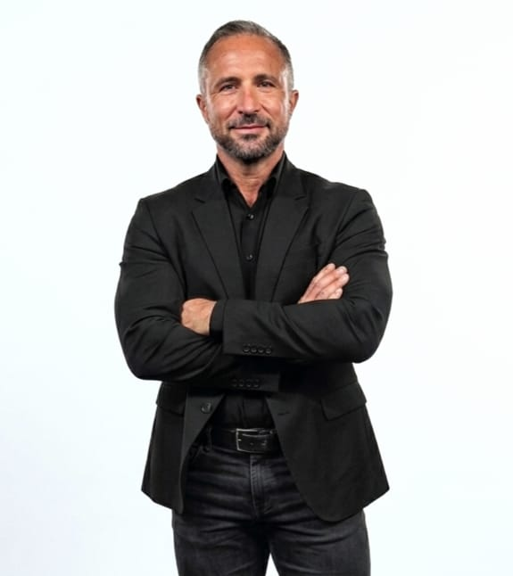

Atendimento humanizado para você viver com mais qualidade. Agende sua consulta presencial ou tire suas dúvidas.

Clínico Geral e Nutrologia | CRM-SP 138753
Com mais de 20 anos de experiência como médico, o Dr. Thiago busca não apenas tratar doenças, mas promover a saúde e o bem-estar completo dos seus pacientes.
Formado em Medicina pela EMESCAM e pós-graduado em Nutrologia pelo Hospital Israelita Albert Einstein, seu atendimento é focado na união entre a clínica médica tradicional e a otimização metabólica, auxiliando em processos de emagrecimento, hipertrofia e longevidade saudável.
Cuidado integral com a sua saúde, focando em prevenção, diagnóstico e otimização do seu metabolismo.
Check-ups regulares, diagnóstico e tratamento de doenças comuns, com foco na medicina preventiva e na sua saúde global.
Diagnóstico e tratamento de deficiências nutricionais, reeducação do metabolismo e acompanhamento de doenças crônicas.
Estratégias médicas para perda de peso sustentável, sem radicalismos, respeitando a individualidade do seu corpo.
Otimização de resultados físicos, ganho de massa muscular e acompanhamento para quem busca melhor rendimento nos treinos.
Respostas rápidas para as principais dúvidas dos nossos pacientes.
A primeira consulta dura em média 1 hora. Nela, o Dr. Thiago fará uma avaliação clínica detalhada, análise do seu histórico, solicitação de exames e a estruturação do plano de tratamento inicial.
Os atendimentos são exclusivamente particulares para garantir o tempo e a atenção que você merece. No entanto, emitimos recibo para que você possa solicitar o reembolso junto ao seu plano de saúde.
Sim! Se você tiver exames de sangue ou imagem recentes (feitos nos últimos 6 meses), traga-os na sua primeira consulta. Isso nos ajuda a ter uma visão inicial mais rápida do seu metabolismo.
Sim. A bioimpedância está inclusa na consulta e será feita periodicamente para acompanhar sua evolução.
A duração varia de acordo com o seu objetivo e resposta ao tratamento. Tudo é avaliado individualmente.